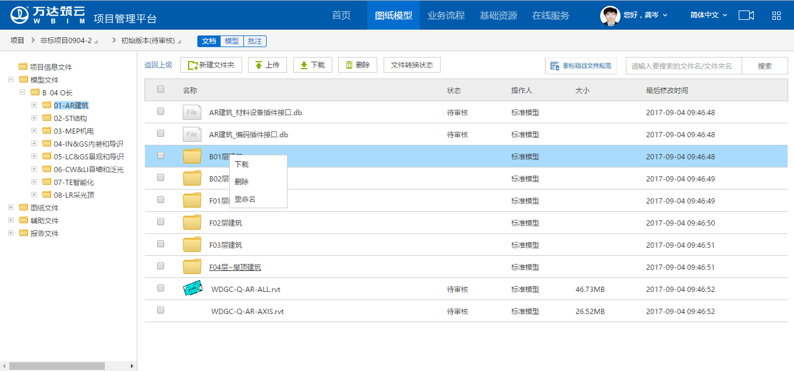
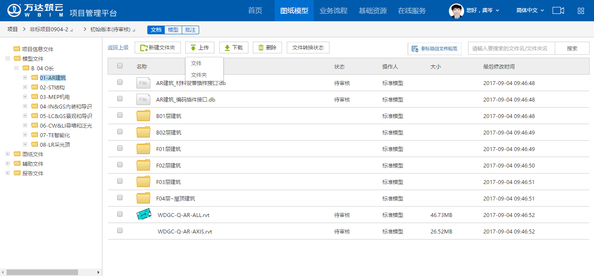

1 规范说明
1.1 文件目录规范
模型文件、图纸文件目录结构、目录名称需保持跟默认目录地图一致，如不一致的话，会导致模型集成及业务数据关联存在问题；模型、图纸目录详见 《模型及图纸目录地图. xlsx》。
1.2 模型文件命名规范
文件名需要遵循文件名命名规范：WDGC-Q-专业代码-楼层编码-文件具体名称；另外“其它”目录中文件的文件名不允许含楼层编码；如不按照规范命名，会导致模型浏览存在问题。
2 文档上传说明
（1） 选择模型文件夹，上传对应的模型文件；选择图纸文件夹，上传对应的图纸文件；其中，文件夹可自定义新增、编辑、删除；但是默认生成的目录如删改后跟目录地图不一致的话，会导致模型集成及业务数据关联存在问题。
（2） 平台支持单文件上传、文件夹上传、拖拽上传。其中，上传文件夹时，文件夹内的文件同时被上传；
（3） 推荐方式：在模型文件、图纸文件线下创建文件目录时，即按照模型图纸地图目录结构创建，在上传平台时，直接拖拽整个模型文件、图纸文件目录上传
注：图纸文件在上传时不能以压缩包形式上传，以压缩包上传后无法在线预览，且可能影响后续模块化流程的进行。
